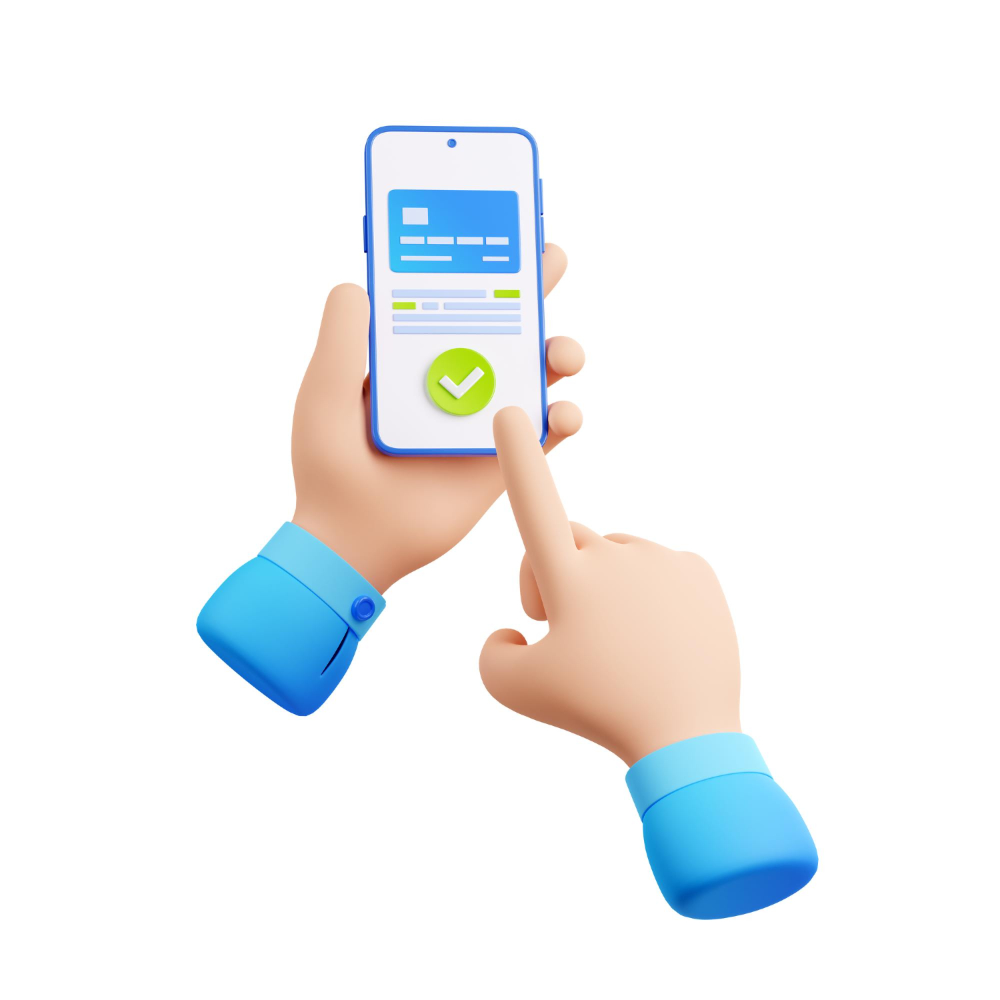
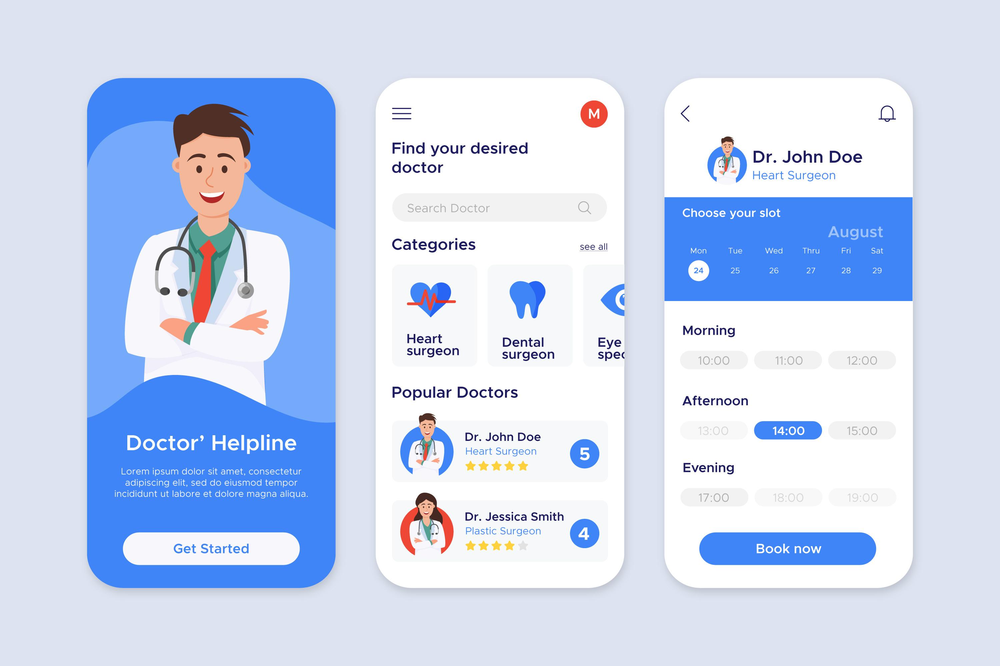
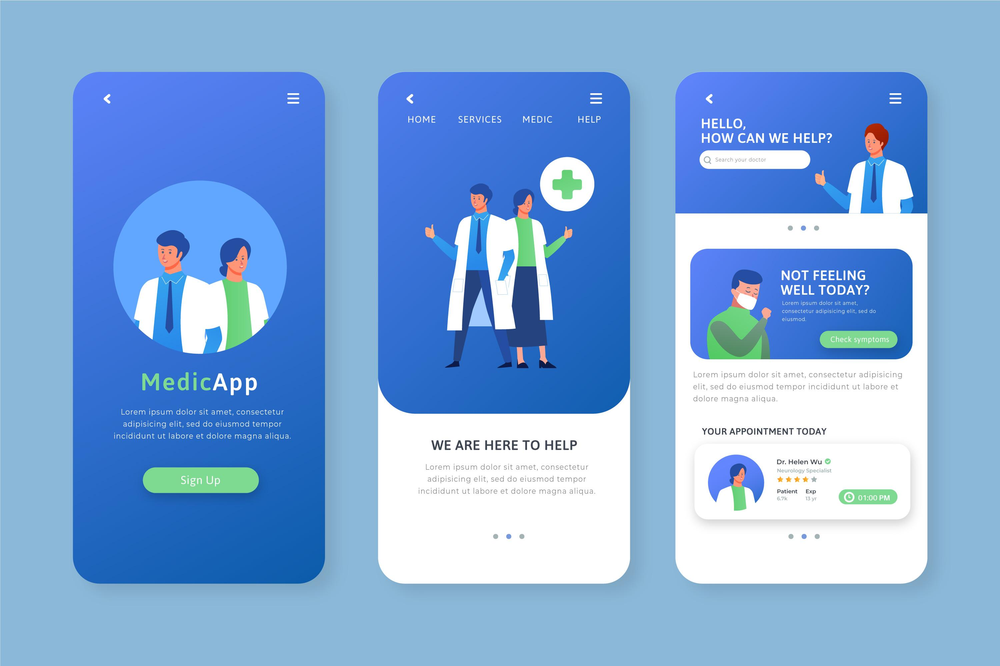

Guia de Uso Passo a Passo
Aprenda a usar nosso aplicativo de saúde digital de forma simples
Como usar o aplicativo

01
Acesse o aplicativo
Toque no ícone do aplicativo na tela do seu celular para abri-lo. A tela inicial mostrará as principais opções.
02
Agende sua consulta
Toque no botão "Agendar Consulta". Selecione a especialidade médica desejada e escolha uma data e horário disponíveis.


03
Confirme o agendamento
Revise os detalhes da consulta e toque em "Confirmar". Você receberá um comprovante na tela e por SMS.
04
Acesse sua consulta
No dia e hora marcados, toque em "Minhas Consultas" e depois em "Iniciar Consulta" para começar sua telemedicina.
Precisa de mais ajuda?
Nossa equipe está pronta para te auxiliar pessoalmente